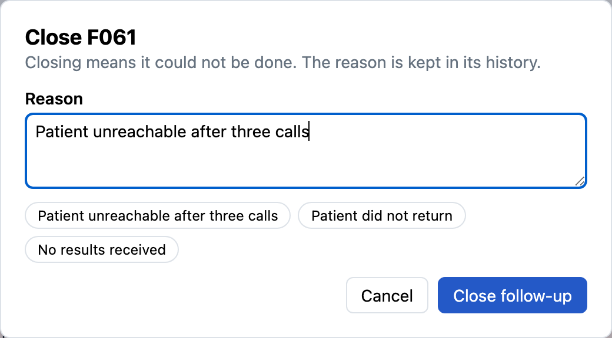

A file with one bad record is refused whole

1
2
- 1Nothing is savedThe clinic asked for all or nothing, so the database stays as it was.
- 2Every problem, with its reasonMissing fields, bad dates, unknown action types, and missing patients, each named so the file can be fixed.
Flags show what is slipping

1
2
3

- 1Today at a glanceOverdue, due soon, and no-date counts for the “As of” date.
- 2One flag per follow-upOverdue the day after its date; due soon inside its window; no date when none is set.
- 3Change it in placeMark done in one click. Closing asks for the reason, which is kept in the history.
Every change is kept, with who made it

1
2
- 1Closed, with the reasonDr. Alder closed it: “Patient unreachable after three calls.”
- 2Hand-off and rescheduleThe nurse moved the date and handed it to Dr. Alder. Each change has the time, the person, and their note.
Each person sees their own follow-ups

1
2
3
- 1Signed in by emailStaff sign in with their clinic email.
- 2Her numbers onlyCounts cover only the follow-ups assigned to her.
- 3Her rows onlyLists, CSV files, the report, and her questions use the same rule. Importing and adding records are for managers.
Anyone can ask; each gets their own answer

1
2
3
- 1Asked by the nurseHer question reads only her follow-ups. The database enforces it, not the AI.
- 2Read onlyAI never completes, assigns, or changes a follow-up.
- 3A plain answerOne sentence and the rows: lab 5, recheck 3, referral 1, her 9 overdue.
Questions cannot change records: “Mark F001 as done” is refused. The AI model sees the question, the table layout, and the asker's staff ID, never patient records.